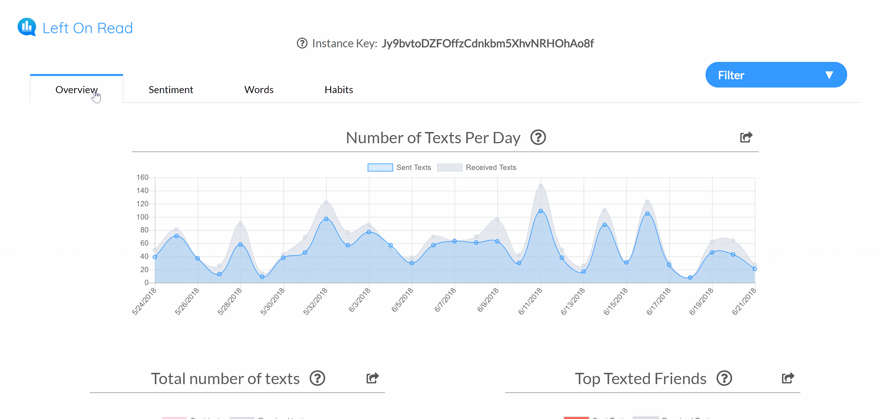
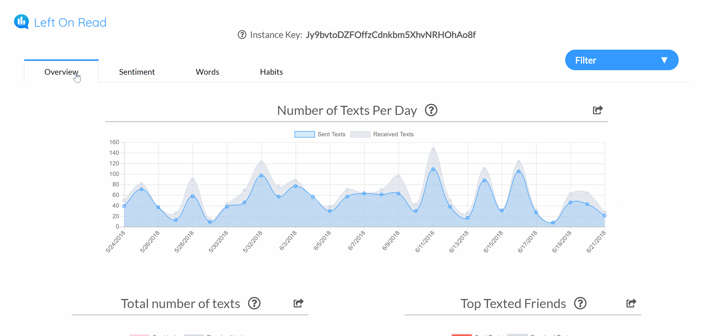

Problem

"I complained to my girlfriend that I always text her first. 'Prove it,' she said."
Alex Danilowicz, Left On Read Founder
That's where Left On Read was born. But as the idea matured, we realized that a product like Left On Read empowers users by giving the data back to them.
Our data is being tracked everywhere. From our Google searches, to our Amazon shopping carts, to even our emails at work, companies store and analyze data about our online activity.
But why not let the user analyze his/her own data?
We wanted to start with the most common form of communication in today's world: text messages. Our goal was to analyze Messager and iMessage conversations on macOS computers, and share the data back with the user.
Initial design challenges
- How might we make the data impactful?
- How might we make the data exciting?
- How might we keep the user engaged beyond a one time use?
User Research

Through our user interviews, we were met with mixed opinions about a text message analyzing service. Some were concerned about overanalyzing their relationships. Others believed that a service like Left On Read would be a shallow representation of a relationship. But one user quote defined a new focus for our team...
"I would think twice about uploading my text messages to a website... "
Dartmouth Student '20
From this point, we knew we had to focus on creating a comfortable and trusting environment for the user to interact with the website. We looked at how other websites that handled sensitve information, and drew inspiration from Apple, Google and even 23andMe.
By creating user personas for different user groups that we identified through our interviews, we were able to empathize with our target audience and dive into the project with their needs and wants in mind.

Ideate
Simplify. Simplify. Simplify.
We wanted to get the data to the user as quick as possible, and therefore we chose to make user flow as straightforward as possible. In terms of the user interface, we also believed a minimalistic, modern design would help build our website's credibility. With the minimalist design and a straightforward user flow, we aimed to create a clean user experience that flowed with each step of the experience.


For example, initial mockups included a navigation bar at the top of each page. However, we eventually decided to remove it because it cluttered our design and offered little benefit, giving that our site navigation was already straightforward.
One of the main constraints that we worked within was the upload process for the 'chat.db' file on Apple computers that contained all of the text conversations. Because of how the file is stored, we needed to provide clear instructions to the user during the upload process. We bounced around several ideas, from a slideshow tutorial process to even making a short GIF outlining the process. This crucial part of the user flow was something we tested and reiterated multiple times during the prototype phase.
Initial Hi-Fis

Prototype

A week before our project was due, we released a prototype to the rest of our class and sought feedback. Suggestions included...
- "Love the minimalist design, but wish it wasn't so static"
- "Instructions are kind of confusing"
- "Love the quantitative data, but wish there was more analysis about the emotion behind the words."
From the feedback, we knew which parts we had to improve before launch day. We added moments of 'delight' to our project, including fade in animations and a revamped loading screen. We also iterated on several different versions for our upload instructions, eventually setlling on simple text commands after further user testing.
One of the biggest things that we took away from our prototype stage was the fact that our users wanted more than just quantitative data. Our biggest addition was a sentiment analysis system, in which we looked for key words that indicated happiness, anger, stress, love, and outgoingness (which we called the 'social' sentiment).
Originally, we just displayed scores for each sentiment in the analytics, but we began to see a larger potential for the new sentiment. For example, we created a 'Reconnect' graph that displayed contacts with high love sentiment, but hadn't been in communication for a period of time.
My favorite bit of feedback...
"I was definitely a skeptic at first, but this data is so interesting!"
Dartmouth Student '19
Product

 

Next Steps

From the outstanding positive feedback from both our peers and faculty, we knew that we wanted to expand Left On Read to our friends and family, and possibly even the world.
Even from the start, we knew that Left On Read wasn't going to change the world. We were first interested in the project because of the proposed challenge of parsing texts and displaying analytics. But we tapped into a service that catches almost everyone's curiosity, and we want to share the feeling of exploration when we first got our data. It was clear that people loved to see data about themselves.
Since the end of spring 2018, we have been working on a design overhaul and preparing for a mass launch to the rest of the world. Check out what we're up to at leftonread.me